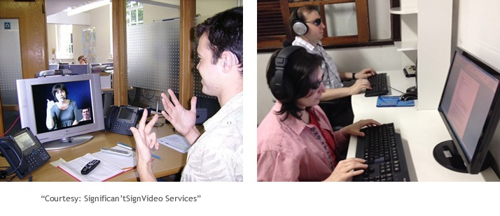

Pequenas atitudes, grandes mudanças
A inclusão começa quando reconhecemos as necessidades de outras pessoas e removemos barreiras.

Respeite a autonomia
Pergunte antes de oferecer ajuda e respeite a resposta. Converse diretamente com a pessoa.
Comunicação clara
Use linguagem simples, ofereça informações em formatos diferentes e respeite o tempo de cada pessoa.
Na escola e no trabalho
Compartilhe materiais acessíveis, mantenha espaços de circulação livres e incentive a participação de todos.
Referências
ENAP. eMAG Conteudista: Módulo 1 / Introdução (2016) e Módulo 2 / Web Acessível (2016).